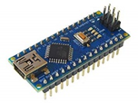

PRODUCTS
HC による AI 分散処理ミドルウェア (開発中)
Deep Learning の勘所
現代の AI の代表格である Deep Learning は従来手法ではプログラミングしづらかった案件を Neural Network を利用して自動化します。案件に合わせて Neural Network を学習させ推論可能な AI ロジックを生成するためには膨大な元データが必要となります。
| 元データ | 強化学習 | 推論エンジン |
|---|---|---|
 |
 | |
| ギガ級のファイルを多数集めたテラ ~ ペタ級の容量。対象空間の前後情報である時間軸を含む四次元 | GPUが持つ 16 ~ 32ギガのメモリ上に Neural Network を構築し元データをストリームプロセッシングして学習。空間を再現する三次元 | USB メモリに入る程度のキロ ~ メガ級の AI ロジック を用いてビデオ動画などを処理。イメージセンサーの二次元 |
元データはテラ ~ ペタ級と非常に大容量であるため、強化学習用の GPU サーバーを設置したクラウドにネットワークで転送することが出来ず、Amazon Snowball のようなストレージ機器にデータを保存し宅配便でクラウドに輸送しています。
 強化学習に対して推論エンジンは軽い処理です。学習済みの AI ロジックは数キロ程度の大きさであり、組み込みプロセッサーに AI ロジックをすべて読み込んだ状態で自動運転などの AI 処理が可能です。ただしレスポンスが必要とされるため、軽量ながら並列性の高い専用のチップや FPGA などが利用されます。
強化学習に対して推論エンジンは軽い処理です。学習済みの AI ロジックは数キロ程度の大きさであり、組み込みプロセッサーに AI ロジックをすべて読み込んだ状態で自動運転などの AI 処理が可能です。ただしレスポンスが必要とされるため、軽量ながら並列性の高い専用のチップや FPGA などが利用されます。
強化学習と推論エンジンの負荷の違いを Deep Learing の非対称性と呼びます。
組み込みにおける AI の高速化技術が各社より発表されておりますが、推論エンジン側であるため元々高速化しやすい特性があります。一方、強化学習は推論に比べ高次元の処理 (Hi-Dimenstion Compute) であり高速化はハードウェアの強化に頼っている事が現状です。
高次元処理である強化学習を高速化するため、Hybrid Computingを利用して分散処理をさせるミドルウェアを弊社にて開発中です。
動作環境
- Mirantis Cloud Platform (MCP)
- Intel Xeon processor または nVidia GPU
構成要素
- OpenCL AI ロジックを HC で分散処理するための Python インターフェース
- Ceph ストレージ上で分散処理を実現する MCP 拡張キット
優位点
- 開発の容易性: Dockerによるマイクロサービスの分散化と異なり、一つのアプリケーションの中でAI処理を記述できるため、分散処理のための余分な開発が不要となる。
- 高効率処理: 実行コードをデータ場所に転送して実行するため、データ通信が削減され消費電力が下がり、処理速度が向上する。
- 多種環境対応: OpenCLで記述するためGPUやIntel CPUなど複数環境で動作
- 超高速処理: AI処理がOSを介さずに直接ストレージにアクセスする特別な高速化を実装
提供時期 (見込み)
2018⁄11 弊社サーバー上における動作デモ
2019⁄3 パートナー企業における実運用
2019⁄11 一般公開